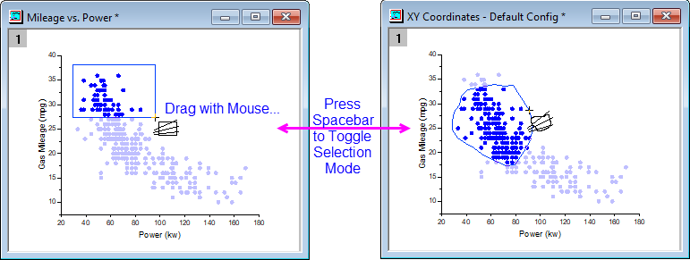
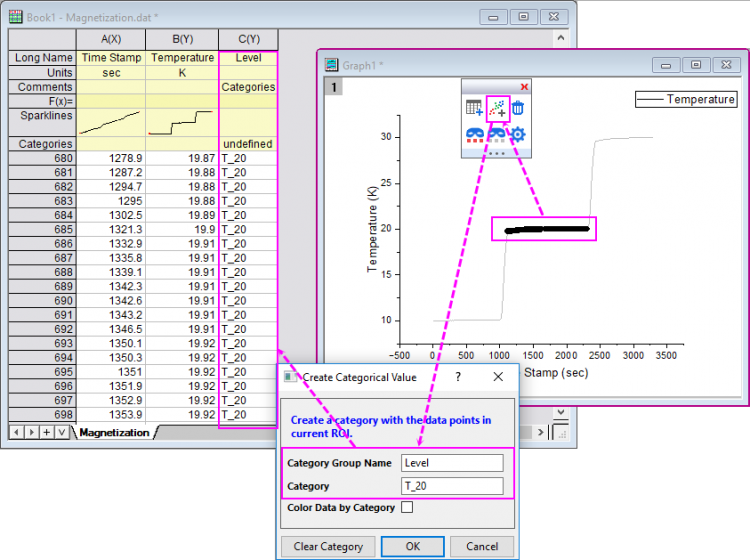
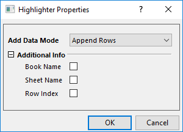

Datenmarkierer: Punkte im Diagramm und Quellarbeitsblatt auswählen
Data-Highlighter
Verwenden Sie das Hilfsmittel Datenmarkierer  (Symbolleiste Hilfsmittel), um gezeichnete Datenpunkte in Ihrem 2D- oder 3D-Punkt-/Balkendiagramm (aus Arbeitsblattdaten) auszuwählen und gleichzeitig die entsprechenden Datenzeilen im Quellblatt hervorzuheben. Sie können auch die Datenzeilen im Arbeitsblatt auswählen und die entsprechenden Punkte in den Zeichnungen dieser Daten hervorheben.
(Symbolleiste Hilfsmittel), um gezeichnete Datenpunkte in Ihrem 2D- oder 3D-Punkt-/Balkendiagramm (aus Arbeitsblattdaten) auszuwählen und gleichzeitig die entsprechenden Datenzeilen im Quellblatt hervorzuheben. Sie können auch die Datenzeilen im Arbeitsblatt auswählen und die entsprechenden Punkte in den Zeichnungen dieser Daten hervorheben.

 | Im Fall von 2D-Linien-/-Symbol-/-Säulendiagrammen mit mehreren Zeichnungen im Layer werden durch Klicken auf eine der Zeichnungen im Diagrammfenster oder in der Objektverwaltung die anderen Zeichnungen im Layer abgeblendet und die Quelldaten im Arbeitsblatt markiert. Wenn Sie nicht möchten, dass die Arbeitsblattdaten hervorgehoben werden, wenn Sie eine Zeichnung auswählen, setzen Sie die LabTalk-Systemvariable @PS = 0. Siehe FAQ-708 Wie ändere ich permanent den Wert einer Systemvariablen? |
Punkte mit der Datenmarkierung hervorheben
Punkte im Diagramm markieren
- Aktivieren Sie das Diagrammfenster und wählen Sie dann das Hilfsmittel Datenmarkierung auf der Symbolleiste Hilfsmittel.
- Klicken Sie auf einen Punkt in Ihrem Diagrammfenster. Nicht markierte Datenpunkte im Diagrammfenster werden abgeblendet. Die entsprechende Zeile der Arbeitsblattdaten wird hervorgehoben, während die entsprechenden Zeilen der nicht markierten Datenpunkte abgeblendet werden.
- Während Sie sich im Auswahlmodus des Diagramms befinden, können Sie die Pfeiltasten nach links und rechts verwenden, um die Auswahl zum vorherigen oder nächsten Punkt zu verschieben. Dazu wird der Zeilenindex verwendet.
- Um mehrere zufällige Punkte im Diagramm auszuwählen, drücken Sie STRG und klicken dabei mit der Maus.
- Um eien Gruppe von Punkten im Diagramm auszuwählen, ziehen Sie mit der Maus einen Bereich auf. Während das Hilfsmittel Datenmarkierung aktiv ist, verwenden Sie die Leertaste, um zwischen den Auswahlmodi Rechteck und Freiform zu wechseln.

- Wenn Sie die Datenmarkierung im Diagramm öffnen, wird das Dateninfofeld neben dem Diagrammfenster gezeigt. Die Minisymbolleiste Datenmarkierung wird aufgerufen. Klicken Sie auf die Schaltfläche Dateninfofeld
 auf der Minisymbolleiste, um zu steuern, ob dieses Bedienfeld gezeigt werden soll.
auf der Minisymbolleiste, um zu steuern, ob dieses Bedienfeld gezeigt werden soll.- Die Datensätze der ausgewählten Datenpunkte werden im Dateninfofeld aufgelistet. Ändern Sie die ausgewählten Datenpunkte. Die Datensätze im Dateninfofeld werden entsprechend der hervorgehobenen Punkte aktualisiert.
- Beim Wechseln des Diagrammfensters zeigt dieses Bedienfeld das aktive Diagramm.
- Klicken Sie in der oberen, rechten Ecke des Dateninfofelds auf die Schaltfläche Dateninfo festlegen, um zu steuern, welche Datensätze im Feld aufgelistet sind. Tooltipp für Datenpunkte folgen ist standardmäßig aktiviert. Es wird als Tooltipp der Datenpunkte gezeigt.

Punkte im Arbeitsblatt markieren
- Aktivieren Sie das Arbeitsmappenfenster und wählen Sie dann das Hilfsmittel Datenmarkierung auf der Symbolleiste Hilfsmittel.
- Klicken Sie auf eine Zeile im Arbeitsblatt, um alle Datenpunkte der Zeilendaten hervorzuheben (können mehrere Diagrammfenster sein). Nicht markierte Datenpunkte im Diagrammfenster und Arbeitsblatt werden abgeblendet.
- Drücken Sie bei aktivem Auswahlmodus im Arbeitsblatt die Pfeiltasten nach links und rechts, um die Auswahl zur vorherigen oder nächsten Zeile zu verschieben. Gleichzeitig verschieben Sie die Auswahl zum entsprechenden Datenpunkt im Diagrammfenster.
- Um mehrere zufällige Zeilen im Arbeitsblatt auszuwählen, drücken Sie die STRG-Taste, während Sie mit der Maus auf die gewünschten Zeilen klicken. Um mehrere zusammenhängende Zeilen auszuwählen, drücken Sie die SHIFT-Taste, während Sie auf die erste und die letzte gewünschte Zeile klicken oder ziehen Sie mit Ihrer Maus über die Zeilen.
Weitere Operationen für die markierten Punkte
Wenn Sie einen Datenpunkt oder eine Arbeitsblattzeile markiert haben, wird die Minisymbolleiste Datenmarkierung rechts oben im Diagramm- oder Arbeitsmappenfenster angezeigt.
| Für Diagramm |
Für Arbeitsblatt |
 |
 |
Mit Hilfe dieser Symbolleiste können Sie Datenpunkte einfach kopieren, löschen, sie maskieren oder ihre Maskierung aufheben.
Punkte kopieren
Klicken Sie auf die Schaltfläche Teildatensatzblatt erstellen , um die markierten Zeilen/Punkte in ein separates neues Blatt zu kopieren.
Kategorien erstellen
Klicken Sie auf die Schaltfläche Kategorien erstellen  , um den Dialog Kategorialen Wert erstellen zu öffnen.
, um den Dialog Kategorialen Wert erstellen zu öffnen.

Dieser Dialog ähnelt dem des Minitools Cluster und kann dazu verwendet werden, eine Kategorie für die markierten Zeilen/Punkte zu erstellen. Sie dürfen Kategorien wiederholt erstellen, indem Sie den Dialog erneut öffnen oder direkt die Taste "C" drücken, ohne den Dialog zu öffnen.
Punkte löschen
Klicken Sie auf die Schaltfläche Punkte löschen  , um die markierten Datenpunkte oder Arbeitsblattzeilen zu löschen.
, um die markierten Datenpunkte oder Arbeitsblattzeilen zu löschen.
Punkte maskieren/demaskieren
Klicke Sie auf die Schaltfläche Markierte Punkte maskieren/demaskieren  , um die markierten Punkte/Zeilen zu maskieren oder zu demaskieren. Sie können die Schaltfläche Abgeblendete Punkte maskieren/demaskieren
, um die markierten Punkte/Zeilen zu maskieren oder zu demaskieren. Sie können die Schaltfläche Abgeblendete Punkte maskieren/demaskieren  verwenden, um die anderen nicht markierten, abgeblendeten Punkte zu maskieren.
verwenden, um die anderen nicht markierten, abgeblendeten Punkte zu maskieren.
Kopierverhalten für Punkte benutzerdefiniert anpassen
Klicken Sie auf die Schaltfläche Dialog Eigenschaften öffnen  , um den Dialog Markierungseigenschaften zu öffnen.
, um den Dialog Markierungseigenschaften zu öffnen.

Datenmodus hinzufügen: Entscheiden Sie, wie die markierten Punkte kopiert werden sollen.
- Zeilen anhängen: Beim Kopieren der Punkte werden sie direkt an das existierende Ergebnisblatt angehängt.
- Zeilen mit Lücke anhängen: In jedem Datenmarkierungsprozess werden die Punkte mit einer Anfangslücke von einer Zeile beim Kopieren der Daten angehängt.
- Neues Blatt öffnen: Es wird ein neues Blatt erstellt, um die Punkte anzuhängen. Dies ist die Standardauswahl für jeden Datenmarkierungsprozess.
- Neue Spalten öffnen: Es werden neue Spalten zum existierenden Ergebnisblatts hinzugefügt, um die Punkte anzuhängen.
Zusätzliche Info: Entscheiden Sie, ob die Dateninfo während des Kopierens der markierten Punkte eingeschlossen werden soll.
Weitere Operationen in einer Version vor Origin 2022
Für die Version vor Origin 2022, die über keine Minisymbolleiste Datenmarkierung verfügt, können Sie den Anweisungen unten folgen, um weitere Operationen durchzuführen:
Die markierten Arbeitsblattdatenzeilen bleiben ausgewählt, auch nachdem Sie den Modus des Datenmarkierers verlassen (drücken Sie ESC oder klicken Sie auf das Hilfsmittel Zeiger  ). Dies erlaubt Ihnen die weitere Bearbeitung der Daten. Die folgenden Aktionen werden unterstützt:
). Dies erlaubt Ihnen die weitere Bearbeitung der Daten. Die folgenden Aktionen werden unterstützt:
- Zellen leeren: Klicken Sie mit der rechten Maustaste auf die Arbeitsblattauswahl und wählen Sie Leeren im Kontextmenü oder drücken Sie die Taste ENTF. Die Arbeitsblattzellen bleiben erhalten.
- Zeilen löschen: Klicken Sie mit der rechten Maustaste auf die Arbeitsblattauswahl und wählen Sie Zeilen löschen. Entfernt die Arbeitsblattzellen.
- Daten maskieren: Klicken Sie auf Spalte: Maskieren oder klicken Sie auf die Schaltfläche Maskieren
 auf der Symbolleiste Maskierung. Andere maskierungsverwandte Operationen werden auch unterstützt.
auf der Symbolleiste Maskierung. Andere maskierungsverwandte Operationen werden auch unterstützt.
- Daten kopieren: Um nur Daten in die Datenzeilen des Arbeitsblatts zu kopieren, drücken Sie STRG + C oder klicken Sie mit der rechten Maustaste auf die Auswahl und wählen Sie Kopieren. Um die Beschriftungszeileninfos der Arbeitsblattspalte mitsamt der Datenzeilenauswahl zu kopieren, öffnen Sie das Skriptfenster (Fenster: Skriptfenster) und geben Sie Folgendes ein:
wcopy -d
- Stellen Sie im aufgerufenen Dialog wcopy sicher, dass das Kontrollkästchen Daten kopieren aktiviert ist, legen Sie dann das Ausgabearbeitsblatt fest und klicken Sie auf OK.